مولّدات الجهد العاليHigh Voltage Generators
نظري · م02 · 13.3 دقيقةأقسام المحاضرة (8)
- العناوين والمقدمةOutlines & Introduction
- المحوّلاتTransformers
- تقويم الجهدVoltage Rectification
- أنواع المولّدات حسب الطورPhase Power Types (Generators)
- المولّد عالي الترددHigh Frequency Generator
- دوائر جهاز الأشعة السينيةX-ray Circuits
- تأثير شكل الموجةEffect of Waveform on Radiation Output & Image Quality
- أسئلة مقترحة من الأستاذSuggested Questions
العناوين والمقدمةOutlines & Introduction
High voltage generators:
مولّدات الجهد العالي:
- • Transformersالمحوّلات.
- • Voltage rectificationتقويم الجهد.
- • Phase power typesأنواع الطاقة حسب الطور.
- • X-ray circuitsدوائر جهاز الأشعة السينية.
- • Effect of waveform on radiation output & image qualityتأثير شكل الموجة على ناتج الأشعة وجودة الصورة.
مقدمةIntroduction
A high voltage generator (HVG) in an X-ray system acts as the core power unit, converting low-voltage input (120-440VAC) into high-voltage electrical energy (typically 30 kV) to (150 kV) for medical, over (450 kV) for industrial) to accelerate electrons in the X-ray tube and produce X-ray photons. Modern units use high-frequency, constant-potential technology to minimize voltage ripple and ensure consistent, high-quality image production.
مولّد الجهد العالي (HVG) في منظومة الأشعة هو وحدة الطاقة الأساسية: يحوّل الجهد الداخل المنخفض (120–440 فولت متناوب) إلى طاقة كهربائية بجهد عالٍ (عادةً من 30 إلى 150 كيلوفولت للاستعمال الطبي، وأكثر من 450 كيلوفولت للاستعمال الصناعي) لتسريع الإلكترونات في أنبوب الأشعة وإنتاج فوتونات الأشعة السينية. الأجهزة الحديثة تستعمل تقنية التردد العالي والجهد الثابت لتقليل تموّج الجهد (voltage ripple) وضمان صور ثابتة عالية الجودة.
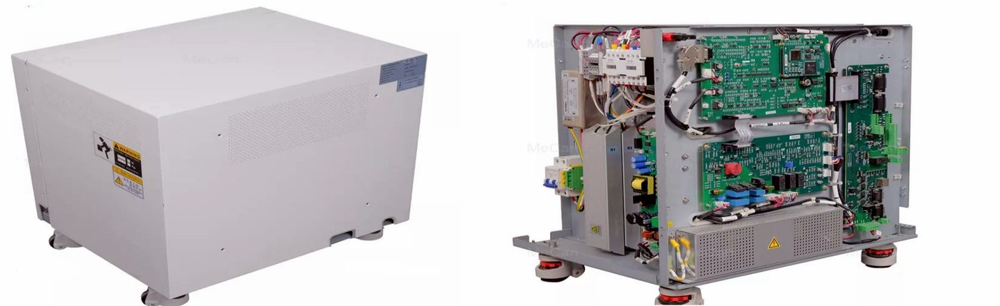
المحوّلاتTransformers
المحوّل الذاتيAutotransformer
X – Ray operating consoles usually have adjustments labeled major KVp and minor KVp, and by selecting a combination of these controls the technologist can provide precisely the required KVp.
لوحات تحكم الأشعة فيها عادةً مفتاحان: major kVp وminor kVp، وباختيار مزيج منهما يضبط تقنيّ الأشعة قيمة kVp المطلوبة بالضبط.
The major KVp adjustment and the minor KVp adjustment represent two separate series of taps of the autotransformer.
مفتاح major kVp ومفتاح minor kVp يمثّلان سلسلتين منفصلتين من مآخذ (taps) المحوّل الذاتي.
Selection of the appropriate taps can be made by an adjustment knob or by a push button. If the primary voltage to the autotransformer is 220 V, the output of the autotransformer can be controlled from about 100 to 400 V depending on the design of the autotransformer.
اختيار المأخذ المناسب يكون بمقبض ضبط أو بزر ضغط. إذا كان الجهد الأولي الداخل للمحوّل الذاتي 220 فولت، يمكن التحكم بناتجه من حوالي 100 إلى 400 فولت حسب تصميمه.
This voltage becomes the input to the high-voltage step-up transformer in the high – voltage section that increases the voltage to provide the kilovoltage required.
هذا الجهد يصير مدخلاً لمحوّل الجهد العالي الرافع (step-up transformer) في قسم الجهد العالي، الذي يرفع الجهد إلى الكيلوفولت المطلوب.
The autotransformer is single winding around an iron core operates on self-induction principle, it designed to supply voltage of varying magnitude to the several different circuits of the x-ray machine, most prominently the filament circuit and the highvoltage circuit.
المحوّل الذاتي ملف واحد حول قلب حديدي، يعمل بمبدأ الحثّ الذاتي (self-induction)، ومصمّم ليعطي جهوداً بقيم مختلفة لعدة دوائر في جهاز الأشعة، أهمها دائرة الفتيلة ودائرة الجهد العالي.
The voltage supplied to the high-voltage transformer is controlled and variable. It is much safer and easier in terms of engineering to vary a low voltage and then increase it than to increase a low voltage to the kilovolt level and then vary its magnitude.
الجهد الداخل لمحوّل الجهد العالي مسيطَر عليه ومتغيّر. هندسياً أأمن وأسهل أن نغيّر جهداً منخفضاً ثم نرفعه، من أن نرفع الجهد المنخفض إلى مستوى الكيلوفولت ثم نغيّر قيمته.
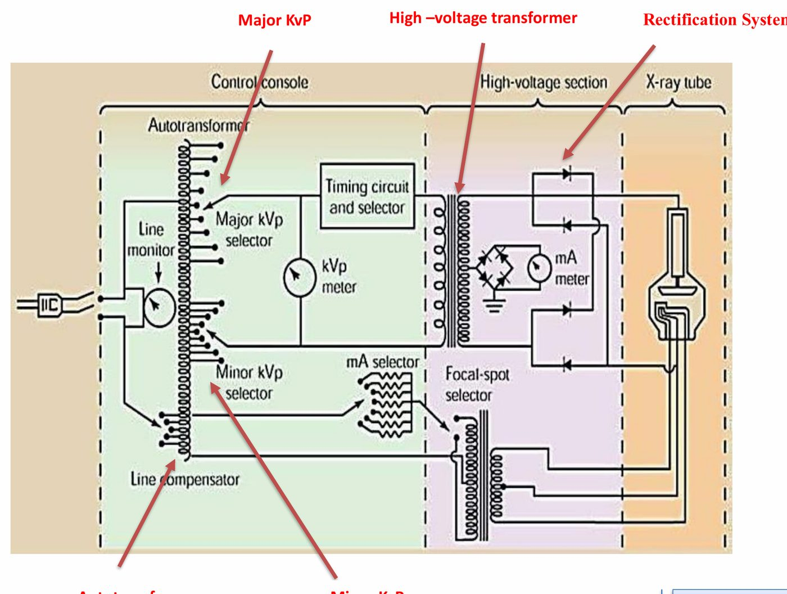
محوّل الجهد العاليHigh-voltage transformer
The high – voltage transformer is a step – up transformer, that is, the secondary (induced) voltage is greater than the primary (supply) voltage because the number of secondary windings is greater than the number of primary windings. The ratio of the number of secondary windings to the number of primary windings is called the turn’s ratio.
محوّل الجهد العالي محوّل رافع: الجهد الثانوي (المستحَث) أكبر من الجهد الأولي (المجهِّز) لأن عدد لفّات الملف الثانوي أكبر من لفّات الملف الأولي. ونسبة لفّات الثانوي إلى لفّات الأولي تُسمّى «نسبة اللفّات» (turns ratio).
The voltage increase is proportional to the turn’s ratio, also the current is reduced proportionately. The turn’s ratio of the high – voltage transformer is usually between 500 and 1000. Since transformers operate only on alternating current, the voltage waveform on both sides of a high – voltage transformer sinusoidal.
زيادة الجهد تتناسب مع نسبة اللفّات، والتيار يقل بنفس النسبة. نسبة اللفّات في محوّل الجهد العالي عادةً بين 500 و1000. ولأن المحوّلات تعمل بالتيار المتناوب فقط، يكون شكل موجة الجهد على جانبي المحوّل جيبياً (sinusoidal).
The only difference between the primary & secondary waveform is their amplitude. The primary voltage is measured in volt, and the secondary voltage is measured in kilovolts. 𝑉𝑠 𝑁𝑠 = 𝑉𝑝 𝑁𝑝 (Turn’s ratio)
الفرق الوحيد بين موجة الأولي وموجة الثانوي هو السعة (amplitude): الجهد الأولي يُقاس بالفولت، والثانوي بالكيلوفولت. والعلاقة: Vs / Vp = Ns / Np (نسبة اللفّات).
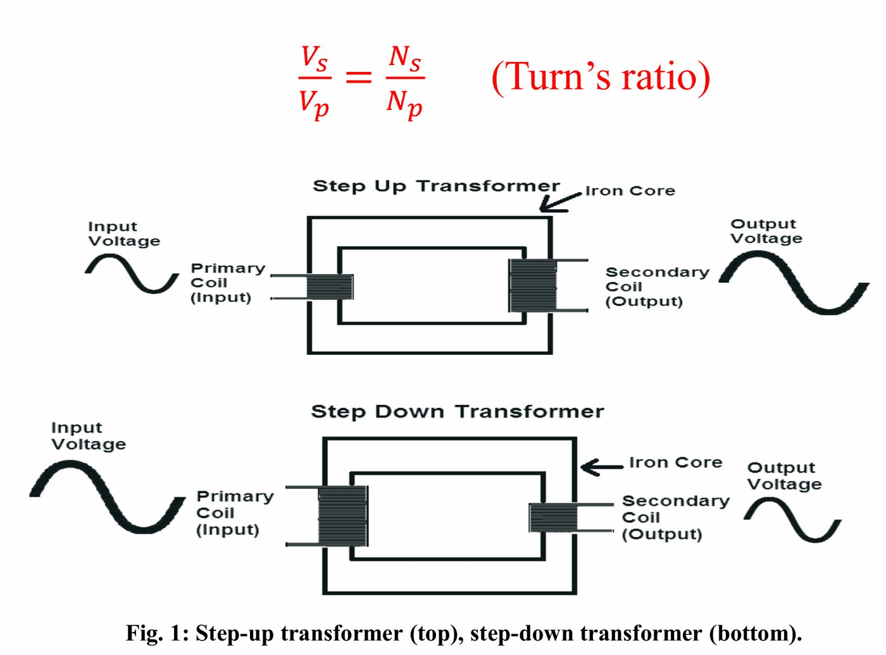
تقويم الجهدVoltage Rectification
Although transformers operate with alternating current, x – ray tubes must be provided with direct current.
مع أن المحوّلات تعمل بالتيار المتناوب، أنبوب الأشعة يحتاج تياراً مستمراً.
Rectification is the process of converting alternating voltage into direct voltage and therefore alternating current into direct current.
التقويم (rectification) هو تحويل الجهد المتناوب إلى جهد مستمر، وبالتالي التيار المتناوب إلى تيار مستمر.
Rectification is accomplished with device called diodes (two electrode).
يتم التقويم بأجهزة اسمها الثنائيات (diodes) (ذات قطبين).
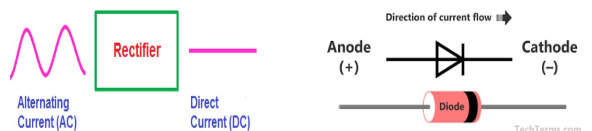
نوعا التقويمTypes of voltage rectification
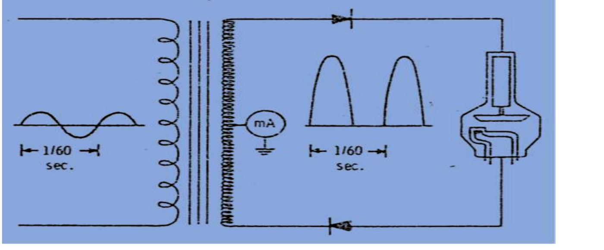
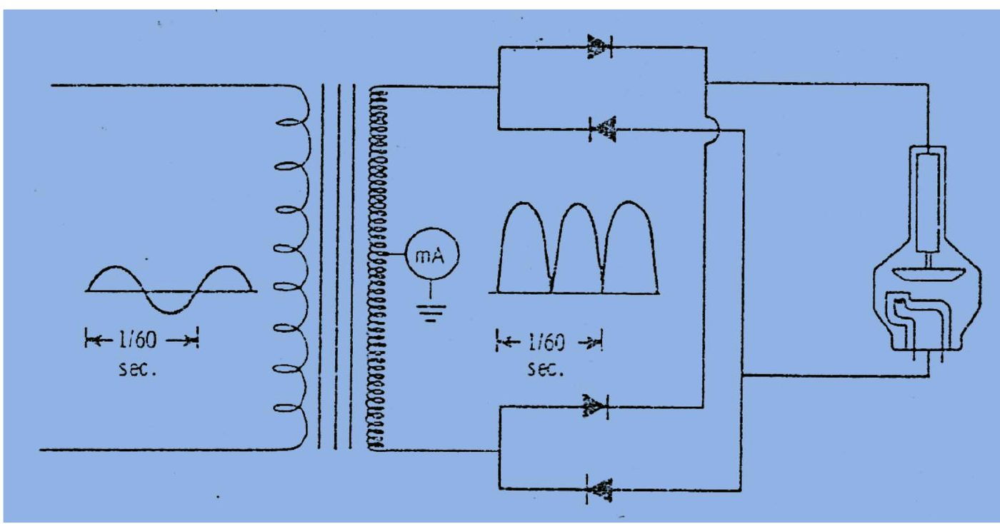
أنواع المولّدات حسب الطورPhase Power Types (Generators)
X-ray generator types include; single-phase, 3-phase, and high-frequency generators.
أنواع مولّدات الأشعة: أحادي الطور، وثلاثي الطور، وعالي التردد.
المولّد أحادي الطورSingle-Phase Generators
Single-phase, full-wave rectified generators produce two pulsations per cycle (120 pulsations per second) with 100% voltage ripple. With a constantly changing voltage potential, a spectrum of x-ray energies is produced with an average energy somewhere below peak kilovoltage. This pulsating beam results in a longer exposure time, and greater patient dose from lower energy soft x-rays. Single-phase generators are common for dental radiography where teeth are relatively thin and longer exposure times are tolerable (no moving parts).
المولّد أحادي الطور بتقويم الموجة الكاملة ينتج نبضتين في كل دورة (120 نبضة في الثانية) مع تموّج جهد 100%. ولأن فرق الجهد يتغيّر باستمرار، ينتج طيف من طاقات الأشعة معدّله أقل من ذروة الكيلوفولت. هذه الحزمة النابضة تعني زمن تعرّض أطول، وجرعة أكبر للمريض من الأشعة الليّنة منخفضة الطاقة. المولّدات أحادية الطور شائعة في تصوير الأسنان، لأن الأسنان رقيقة نسبياً ويُتحمّل فيها زمن تعرّض أطول (لا أجزاء متحركة).
المولّد ثلاثي الطورThree-Phase Generators
Voltage waveform has a value near zero The x –ray produced by the signal – phase,. This leads to a little diagnostic value because of their low energy and therefore low penetrability.
موجة الجهد لها قيمة قريبة من الصفر؛ والأشعة التي ينتجها المولّد أحادي الطور قيمتها التشخيصية قليلة لأن طاقتها منخفضة، وبالتالي قدرتها على الاختراق (النفاذ) منخفضة.
One method of overcoming this deficiency is to employ the principle of generating three simultaneous voltage waveforms, such a manipulation result in a three – phase power.
إحدى طرق التغلّب على هذا النقص: توليد ثلاث موجات جهد متزامنة، وهذا ينتج الطاقة ثلاثية الطور.
With three – phase power, multiple voltage waveforms are superimposed on one another, resulting in a waveform that maintains a nearly constant voltage, consequently, the voltage impressed across x – ray tube never dropping to zero during exposure.
في الطاقة ثلاثية الطور تتراكب عدة موجات جهد فوق بعضها، فتنتج موجة جهدها شبه ثابت، وبذلك لا ينزل الجهد على الأنبوب إلى الصفر أثناء التعرّض.
A three-phase generator uses a three-phase AC line source for the purpose of creating more pulsations per unit time. This effectively reduces voltage ripple and increases the efficiency of x-ray production.
المولّد ثلاثي الطور يستعمل مصدر تيار متناوب ثلاثي الطور حتى ينتج نبضات أكثر في وحدة الزمن، وهذا يقلّل تموّج الجهد ويزيد كفاءة إنتاج الأشعة.
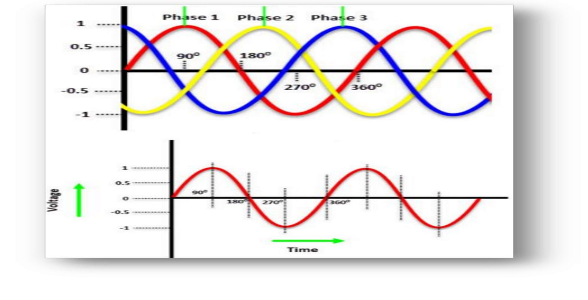
A six-pulse generator delivers six pulsations per cycle, which reduces voltage ripple to 13% of kVp (see Fig. 4). Changing the wiring configuration produces 12 pulses per cycle (12-pulse generator), reducing voltage ripple to 3% of kVp. Using three-phase power results in greater photon output per unit of electrical input (mR/mAs) with higher average energy compared with single-phase units. Three-phase generators are expensive and rely on costly power line installations.
المولّد سداسي النبضات (six-pulse) يعطي ست نبضات في الدورة، فيقلّ التموّج إلى 13% من kVp. وبتغيير طريقة التوصيل نحصل على 12 نبضة في الدورة (12-pulse)، فيقلّ التموّج إلى 3% من kVp. الطاقة ثلاثية الطور تعطي ناتج فوتونات أكبر لكل وحدة إدخال كهربائي (mR/mAs) ومعدّل طاقة أعلى من الأجهزة أحادية الطور. لكن المولّدات ثلاثية الطور غالية وتحتاج تمديدات كهربائية مكلفة.
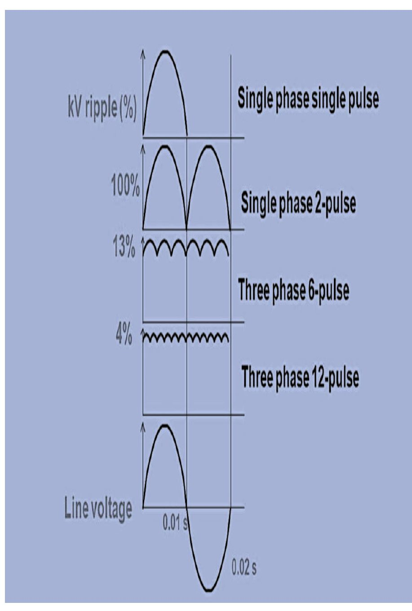
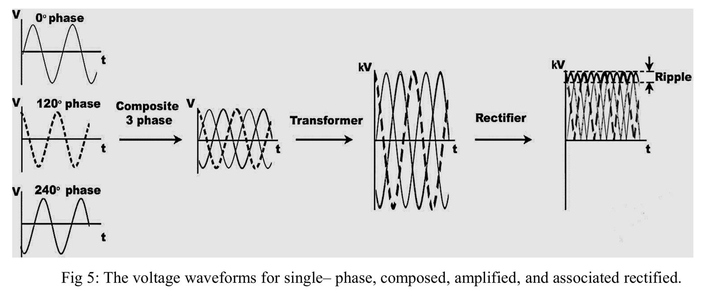
التموّجRipple
The voltage drop from kVp is called ripple and represents the efficiency at which x-rays are produced. The greater the ripple, the less efficient the x-ray production. A kVp of zero accompanies 100% ripple. A voltage potential that drops below peak kilovoltage produces x-ray photons with a wide spectrum of energies.
انخفاض الجهد عن kVp يُسمّى التموّج (ripple)، ويمثّل كفاءة إنتاج الأشعة: كلما زاد التموّج قلّت كفاءة الإنتاج. والتموّج 100% يعني أن الجهد ينزل إلى الصفر. والجهد الذي ينخفض عن الذروة ينتج فوتونات بطيف واسع من الطاقات.
المولّد عالي الترددHigh Frequency Generator
The development in high – voltage generator design was using a high – frequency electric circuit to the x – ray tube. Higher frequency would be obtained, consequently, when the voltage waveform are rectified and smoothed it has less than 1 % ripple, which is even better than three – phase power for x – ray production.
التطوّر في تصميم مولّدات الجهد العالي كان باستعمال دائرة كهربائية عالية التردد لتغذية الأنبوب. فنحصل على تردد أعلى، وعندما تُقوَّم موجة الجهد وتُنعَّم يكون التموّج أقل من 1%، وهو أفضل حتى من الطاقة ثلاثية الطور لإنتاج الأشعة.
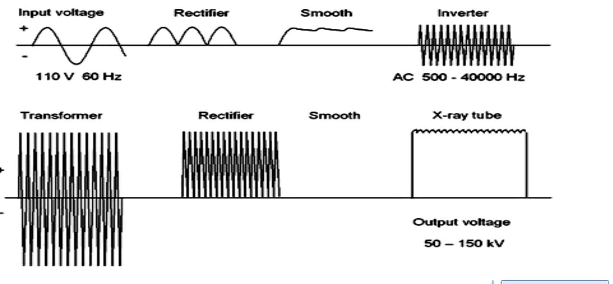
High-frequency generators are smaller and more efficient than three-phase generators. On the other hand, high-frequency generators have been the most widely used over the past decade for the following reasons:
المولّدات عالية التردد أصغر وأكفأ من ثلاثية الطور، وهي الأكثر استعمالاً في العقد الأخير للأسباب التالية:
- • The standard frequency increase from 60 Hz to 500 KHzالتردد يرتفع من 60 هيرتز إلى 500 كيلوهيرتز.
- • The highest average (effective) x-ray energyأعلى معدّل طاقة (فعّالة) للأشعة.
- • lower soft radiation dosage to patientsجرعة أقل من الأشعة الليّنة على المريض.
- • Nearly constant potential waveformموجة جهد شبه ثابتة.
- • Smaller in designتصميم أصغر.
- • Increased radiation quality and quantityزيادة نوعية الأشعة وكميتها.
- • Shortest exposure time.أقصر زمن تعرّض.
- • Increase x-ray tube life.عمر أطول لأنبوب الأشعة.
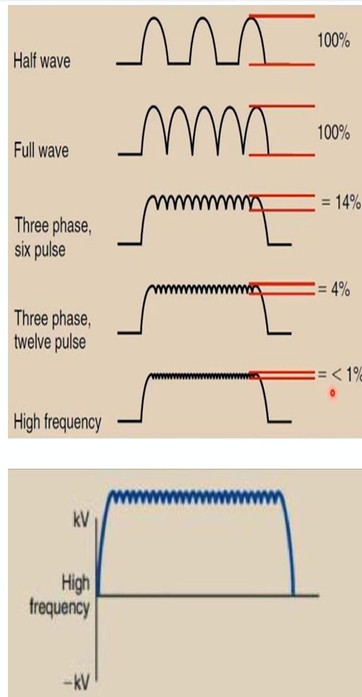
دوائر جهاز الأشعة السينيةX-ray Circuits
X-ray circuits are designed to provide the necessary electrical power to an X-ray tube to generate, control, and accelerate electrons to produce X-ray radiation.
دوائر جهاز الأشعة مصمّمة لتوفّر الطاقة الكهربائية اللازمة لأنبوب الأشعة حتى يولّد الإلكترونات ويتحكم بها ويسرّعها لإنتاج الأشعة.
The waveform of this power, which dictates how consistently high voltage is maintained, significantly impacts the efficiency of radiation output and the quality of the resulting image.
شكل موجة هذه الطاقة، الذي يحدّد مدى ثبات الجهد العالي، يؤثّر كثيراً في كفاءة ناتج الأشعة وجودة الصورة الناتجة.
A complete X-ray machine circuit is divided into three main sections:
دائرة جهاز الأشعة الكاملة تنقسم إلى ثلاثة أقسام رئيسية:
الدائرة الأوليةPrimary Circuit
- • Main Switch/Fuses: Controls power input.المفتاح الرئيسي والمصهرات: يتحكم بدخول الطاقة.
- • Line Voltage Compensator: Stabilizes incoming voltage to ensure consistent output.معوّض جهد الخط: يثبّت الجهد الداخل حتى يكون الناتج ثابتاً.
- • Autotransformer: Adjusts the voltage to the step-up transformer, allowing the radiographer to set the desired kilovoltage (kVp).المحوّل الذاتي: يضبط الجهد الداخل للمحوّل الرافع، فيختار المصوّر الشعاعي kVp المطلوب.
- • Exposure Timer: Terminates the exposure after a precise, predetermined time, such as in Automatic Exposure Control (AEC) systems.مؤقّت التعرّض: ينهي التعرّض بعد زمن دقيق محدّد مسبقاً، كما في أنظمة AEC.
دائرة الفتيلةFilament Circuit
- • Filament Step-down Transformer: Decreases input voltage (typically 120-220V) to low voltage (10-12V) and increases amperage (3-5A) to heat the cathode filament.محوّل الفتيلة الخافض: يخفّض الجهد الداخل (عادةً 120–220 فولت) إلى جهد منخفض (10–12 فولت) ويرفع التيار (3–5 أمبير) لتسخين فتيلة الكاثود.
- • mA Selector: A rheostat that controls the temperature of the filament, which in turn determines the number of electrons released (tube current or mA).منتقي mA: مقاومة متغيّرة (rheostat) تتحكم بحرارة الفتيلة، فتحدّد عدد الإلكترونات المتحرّرة (تيار الأنبوب mA).
الدائرة الثانويةSecondary Circuit
- • Step-up Transformer: Increases the voltage from the autotransformer to the kilovoltage required for X-ray production (40–150 kV).المحوّل الرافع: يرفع الجهد القادم من المحوّل الذاتي إلى الكيلوفولت اللازم لإنتاج الأشعة (40–150 كيلوفولت).
- • Rectifier Unit: Solid-state diodes (rectifiers) convert alternating current (AC) from the transformer into direct current (DC), ensuring electrons flow only from the cathode to the anode.وحدة التقويم: ثنائيات الحالة الصلبة تحوّل التيار المتناوب القادم من المحوّل إلى مستمر، فتجري الإلكترونات من الكاثود إلى الأنود فقط.
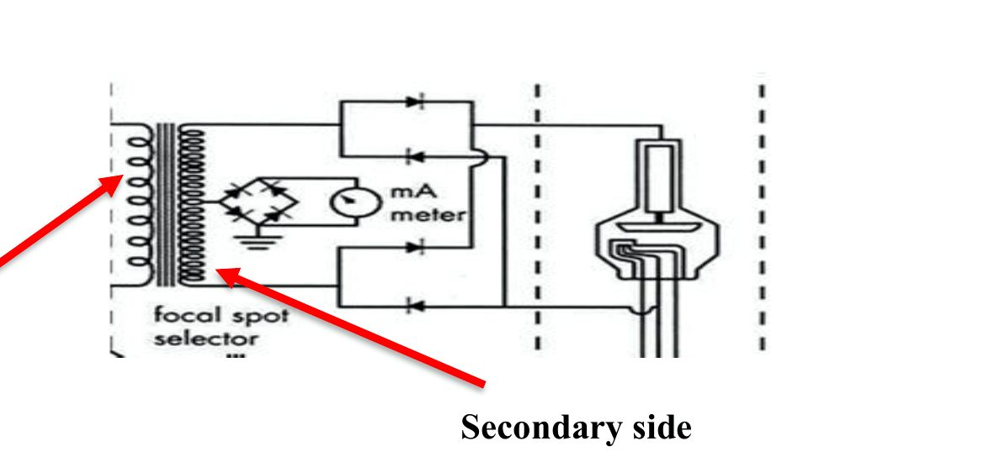
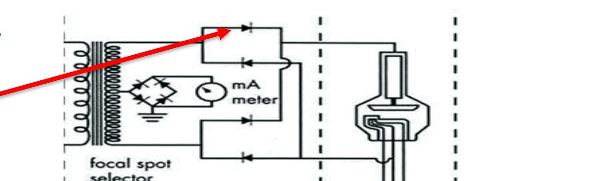
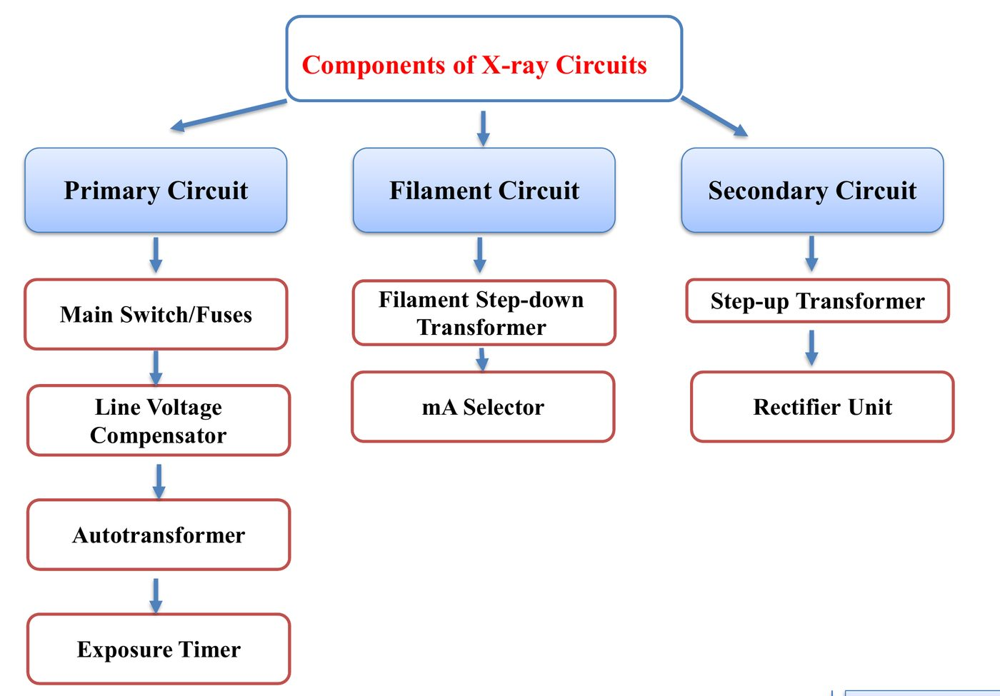
تأثير شكل الموجةEffect of Waveform on Radiation Output & Image Quality
على ناتج الأشعةEffect of waveform on radiation output
The waveform, or the shape of the voltage signal applied to the X-ray tube, determines the efficiency of x-ray production.
شكل الموجة، أي شكل إشارة الجهد المطبّقة على الأنبوب، يحدّد كفاءة إنتاج الأشعة.
- • Voltage Ripple: This is the variation in voltage between the peak (kVp) and minimum value. A lower ripple means more constant, higher-quality, and higherquantity radiation.تموّج الجهد: الفرق بين ذروة الجهد (kVp) وأدنى قيمة. تموّج أقل يعني أشعة أثبت وأعلى نوعية وكمية.
- • Single-phase (100% Ripple): The voltage drops to zero 120 times per second, producing a large amount of low-energy ("soft") X-rays that are absorbed by the patient rather than contributing to the image.أحادي الطور (تموّج 100%): الجهد ينزل للصفر 120 مرة في الثانية، فتنتج كمية كبيرة من الأشعة الليّنة منخفضة الطاقة يمتصها المريض ولا تساهم في الصورة.
- • Three-phase (13% - 4% Ripple): More efficient than single-phase, the voltage rarely drops to zero, resulting in a higher average voltage, increased beam intensity, and better penetration.ثلاثي الطور (تموّج 13%–4%): أكفأ من أحادي الطور؛ الجهد نادراً ما ينزل للصفر، فيرتفع معدّل الجهد وتزيد شدة الحزمة وتتحسّن قدرة الاختراق.
- • High-Frequency (Less than 3% Ripple): These generators produce nearly constant potential, which is the most efficient. They allow for shorter exposure times and higher average energies.عالي التردد (تموّج أقل من 3%): جهد شبه ثابت، وهو الأكفأ؛ يسمح بزمن تعرّض أقصر ومعدّل طاقة أعلى.
على جودة الصورةEffect of waveform on image quality
The type of generator and its waveform directly influence image contrast and detail:
نوع المولّد وشكل موجته يؤثّران مباشرةً في تباين الصورة وتفاصيلها:
- • Improved Contrast and Penetration: Higher frequency and three-phase generators produce higher-energy beams (higher mean photon energy). This increases penetration power, which is ideal for dense body parts but may lower subject contrast in certain scenarios.التباين وقدرة الاختراق: المولّدات عالية التردد وثلاثية الطور تنتج حزمة أعلى طاقة (معدّل طاقة فوتونات أعلى)، فتزيد قدرة الاختراق، وهذا مثالي للأجزاء الكثيفة لكنه قد يقلّل تباين الجسم المصوَّر في بعض الحالات.
- • Reduced Patient Dose: Because higher-frequency generators produce fewer low-energy (soft) X-rays, they reduce the radiation dose delivered to the patient.جرعة أقل للمريض: لأن المولّدات عالية التردد تنتج أشعة ليّنة أقل، فهي تقلّل الجرعة على المريض.
- • Higher Intensity/Quantity: For the same set technical factors (kVp, mA), high-frequency generators produce a higher quantity of photons (higher average mA) than lower-phase generators, enabling improved image quality and reducing the need for high mAs.شدة وكمية أعلى: بنفس العوامل (kVp، mA) تنتج المولّدات عالية التردد فوتونات أكثر من المولّدات الأقل طوراً، فتتحسّن الصورة ونحتاج mAs أقل.
أسئلة مقترحة من الأستاذSuggested Questions
- 1. What is the main disadvantage of a Single-phase generator compared to a Three-phase generator in clinical practice?ما العيب الأساسي للمولّد أحادي الطور مقارنةً بثلاثي الطور في الممارسة السريرية؟
- 2. Why do high-frequency generators typically result in a "Reduced Patient Dose"?لماذا المولّدات عالية التردد تقلّل الجرعة على المريض عادةً؟
- 3. High-frequency generators are often preferred for mobile (portable) X-ray units because:تُفضَّل المولّدات عالية التردد للأجهزة المتنقّلة (المحمولة) لأن:
- 4. When using a Three-phase or High-frequency generator, the exposure time can be significantly reduced because:عند استعمال مولّد ثلاثي الطور أو عالي التردد يمكن تقليل زمن التعرّض كثيراً لأن:
- 5. How does a High-frequency generator affect the "Mean Photon Energy" of the X-ray beam compared to a Single-phase unit?كيف يؤثّر المولّد عالي التردد في معدّل طاقة الفوتونات مقارنةً بأحادي الطور؟
- 6. High-frequency generators allow for significantly shorter exposure times (ms). How does this technical capability specifically impact "Image Detail" in chest or pediatric radiography?المولّدات عالية التردد تسمح بزمن تعرّض أقصر بكثير (بالملي ثانية). كيف يؤثّر هذا في تفاصيل الصورة بتصوير الصدر أو الأطفال؟
- 7. Why are the "Major kVp" and "Minor kVp" adjustments located at the autotransformer stage rather than after the high-voltage transformer?لماذا مفتاحا major kVp وminor kVp في مرحلة المحوّل الذاتي وليس بعد محوّل الجهد العالي؟
المحاضرة مسموعة
نص الأستاذ بالإنكليزي مثل الأصل · 13.3 دقيقة. اضغط أي جملة تسمعها، أو مصطلح منقّط تسمع لفظه ومعناه.
Outlines & Introductionالعناوين والمقدمة
Outlines & Introduction
High voltage generators:
Transformers
Voltage rectification
Phase power types
X-ray circuits
Effect of waveform on radiation output & image quality
Introduction
A high voltage generator (HVG) in an X-ray system acts as the core power unit, converting low-voltage input (120-440VAC) into high-voltage electrical energy (typically 30 kV) to (150 kV) for medical, over (450 kV) for industrial) to accelerate electrons in the X-ray tube and produce X-ray photons. Modern units use high-frequency, constant-potential technology to minimize voltage ripple and ensure consistent, high-quality image production.
Transformersالمحوّلات
Transformers
Autotransformer
X – Ray operating consoles usually have adjustments labeled major KVp and minor KVp, and by selecting a combination of these controls the technologist can provide precisely the required KVp.
The major KVp adjustment and the minor KVp adjustment represent two separate series of taps of the autotransformer.
Selection of the appropriate taps can be made by an adjustment knob or by a push button. If the primary voltage to the autotransformer is 220 V, the output of the autotransformer can be controlled from about 100 to 400 V depending on the design of the autotransformer.
This voltage becomes the input to the high-voltage step-up transformer in the high – voltage section that increases the voltage to provide the kilovoltage required.
The autotransformer is single winding around an iron core operates on self-induction principle, it designed to supply voltage of varying magnitude to the several different circuits of the x-ray machine, most prominently the filament circuit and the highvoltage circuit.
The voltage supplied to the high-voltage transformer is controlled and variable. It is much safer and easier in terms of engineering to vary a low voltage and then increase it than to increase a low voltage to the kilovolt level and then vary its magnitude.
High-voltage transformer
The high – voltage transformer is a step – up transformer, that is, the secondary (induced) voltage is greater than the primary (supply) voltage because the number of secondary windings is greater than the number of primary windings. The ratio of the number of secondary windings to the number of primary windings is called the turn’s ratio.
The voltage increase is proportional to the turn’s ratio, also the current is reduced proportionately. The turn’s ratio of the high – voltage transformer is usually between 500 and 1000. Since transformers operate only on alternating current, the voltage waveform on both sides of a high – voltage transformer sinusoidal.
The only difference between the primary & secondary waveform is their amplitude. The primary voltage is measured in volt, and the secondary voltage is measured in kilovolts. 𝑉𝑠 𝑁𝑠 = 𝑉𝑝 𝑁𝑝 (Turn’s ratio)
Voltage Rectificationتقويم الجهد
Voltage Rectification
Although transformers operate with alternating current, x – ray tubes must be provided with direct current.
Rectification is the process of converting alternating voltage into direct voltage and therefore alternating current into direct current.
Rectification is accomplished with device called diodes (two electrode).
Types of voltage rectification
The inverse voltage is removed from the supply to the x – ray tube by rectification , this represents a condition in which the voltage is not allowed to swing negatively during the negative half of its cycle. Half – wave rectification is accomplished with two diodes placed in the high – voltage section.
Full – wave rectified x- ray machine contain at least four diodes in the high voltage circuit . In Full – wave rectified circuit the negative half – cycle corresponding to the inverse voltage is reversed so that a positive voltage is always directed across the x – ray tube.
Phase Power Types (Generators)أنواع المولّدات حسب الطور
Phase Power Types (Generators)
X-ray generator types include; single-phase, 3-phase, and high-frequency generators.
Single-Phase Generators
Single-phase, full-wave rectified generators produce two pulsations per cycle (120 pulsations per second) with 100% voltage ripple. With a constantly changing voltage potential, a spectrum of x-ray energies is produced with an average energy somewhere below peak kilovoltage. This pulsating beam results in a longer exposure time, and greater patient dose from lower energy soft x-rays. Single-phase generators are common for dental radiography where teeth are relatively thin and longer exposure times are tolerable (no moving parts).
Three-Phase Generators
Voltage waveform has a value near zero The x –ray produced by the signal – phase,. This leads to a little diagnostic value because of their low energy and therefore low penetrability.
One method of overcoming this deficiency is to employ the principle of generating three simultaneous voltage waveforms, such a manipulation result in a three – phase power.
With three – phase power, multiple voltage waveforms are superimposed on one another, resulting in a waveform that maintains a nearly constant voltage, consequently, the voltage impressed across x – ray tube never dropping to zero during exposure.
A three-phase generator uses a three-phase AC line source for the purpose of creating more pulsations per unit time. This effectively reduces voltage ripple and increases the efficiency of x-ray production.
A six-pulse generator delivers six pulsations per cycle, which reduces voltage ripple to 13% of kVp (see Fig. 4). Changing the wiring configuration produces 12 pulses per cycle (12-pulse generator), reducing voltage ripple to 3% of kVp. Using three-phase power results in greater photon output per unit of electrical input (mR/mAs) with higher average energy compared with single-phase units. Three-phase generators are expensive and rely on costly power line installations.
Ripple
The voltage drop from kVp is called ripple and represents the efficiency at which x-rays are produced. The greater the ripple, the less efficient the x-ray production. A kVp of zero accompanies 100% ripple. A voltage potential that drops below peak kilovoltage produces x-ray photons with a wide spectrum of energies.
High Frequency Generatorالمولّد عالي التردد
High Frequency Generator
The development in high – voltage generator design was using a high – frequency electric circuit to the x – ray tube. Higher frequency would be obtained, consequently, when the voltage waveform are rectified and smoothed it has less than 1 % ripple, which is even better than three – phase power for x – ray production.
High-frequency generators are smaller and more efficient than three-phase generators. On the other hand, high-frequency generators have been the most widely used over the past decade for the following reasons:
The standard frequency increase from 60 Hz to 500 KHz
The highest average (effective) x-ray energy
lower soft radiation dosage to patients
Nearly constant potential waveform
Smaller in design
Increased radiation quality and quantity
Shortest exposure time.
Increase x-ray tube life.
X-ray Circuitsدوائر جهاز الأشعة السينية
X-ray Circuits
X-ray circuits are designed to provide the necessary electrical power to an X-ray tube to generate, control, and accelerate electrons to produce X-ray radiation.
The waveform of this power, which dictates how consistently high voltage is maintained, significantly impacts the efficiency of radiation output and the quality of the resulting image.
A complete X-ray machine circuit is divided into three main sections:
Primary Circuit
Main Switch/Fuses: Controls power input.
Line Voltage Compensator: Stabilizes incoming voltage to ensure consistent output.
Autotransformer: Adjusts the voltage to the step-up transformer, allowing the radiographer to set the desired kilovoltage (kVp).
Exposure Timer: Terminates the exposure after a precise, predetermined time, such as in Automatic Exposure Control (AEC) systems.
Filament Circuit
Filament Step-down Transformer: Decreases input voltage (typically 120-220V) to low voltage (10-12V) and increases amperage (3-5A) to heat the cathode filament.
mA Selector: A rheostat that controls the temperature of the filament, which in turn determines the number of electrons released (tube current or mA).
Secondary Circuit
Step-up Transformer: Increases the voltage from the autotransformer to the kilovoltage required for X-ray production (40–150 kV).
Rectifier Unit: Solid-state diodes (rectifiers) convert alternating current (AC) from the transformer into direct current (DC), ensuring electrons flow only from the cathode to the anode.
Effect of Waveform on Radiation Output & Image Qualityتأثير شكل الموجة
Effect of Waveform on Radiation Output & Image Quality
Effect of waveform on radiation output
The waveform, or the shape of the voltage signal applied to the X-ray tube, determines the efficiency of x-ray production.
Voltage Ripple: This is the variation in voltage between the peak (kVp) and minimum value. A lower ripple means more constant, higher-quality, and higherquantity radiation.
Single-phase (100% Ripple): The voltage drops to zero 120 times per second, producing a large amount of low-energy ("soft") X-rays that are absorbed by the patient rather than contributing to the image.
Three-phase (13% - 4% Ripple): More efficient than single-phase, the voltage rarely drops to zero, resulting in a higher average voltage, increased beam intensity, and better penetration.
High-Frequency (Less than 3% Ripple): These generators produce nearly constant potential, which is the most efficient. They allow for shorter exposure times and higher average energies.
Effect of waveform on image quality
The type of generator and its waveform directly influence image contrast and detail:
Improved Contrast and Penetration: Higher frequency and three-phase generators produce higher-energy beams (higher mean photon energy). This increases penetration power, which is ideal for dense body parts but may lower subject contrast in certain scenarios.
Reduced Patient Dose: Because higher-frequency generators produce fewer low-energy (soft) X-rays, they reduce the radiation dose delivered to the patient.
Higher Intensity/Quantity: For the same set technical factors (kVp, mA), high-frequency generators produce a higher quantity of photons (higher average mA) than lower-phase generators, enabling improved image quality and reducing the need for high mAs.
Suggested Questionsأسئلة مقترحة من الأستاذ
Suggested Questions
What is the main disadvantage of a Single-phase generator compared to a Three-phase generator in clinical practice?
Why do high-frequency generators typically result in a "Reduced Patient Dose"?
High-frequency generators are often preferred for mobile (portable) X-ray units because:
When using a Three-phase or High-frequency generator, the exposure time can be significantly reduced because:
How does a High-frequency generator affect the "Mean Photon Energy" of the X-ray beam compared to a Single-phase unit?
High-frequency generators allow for significantly shorter exposure times (ms). How does this technical capability specifically impact "Image Detail" in chest or pediatric radiography?
Why are the "Major kVp" and "Minor kVp" adjustments located at the autotransformer stage rather than after the high-voltage transformer?
23 سؤال من نص المحاضرة، ويّا «ليش صح» بعد كل جواب.
ابدأ الاختباراضغط أي مصطلح منقّط تسمع لفظه ومعناه.
PDF ثنائي اللغة: نص الأستاذ + الترجمة + الخلاصة + الأسئلة · 1.6 MB
تحميل الملف